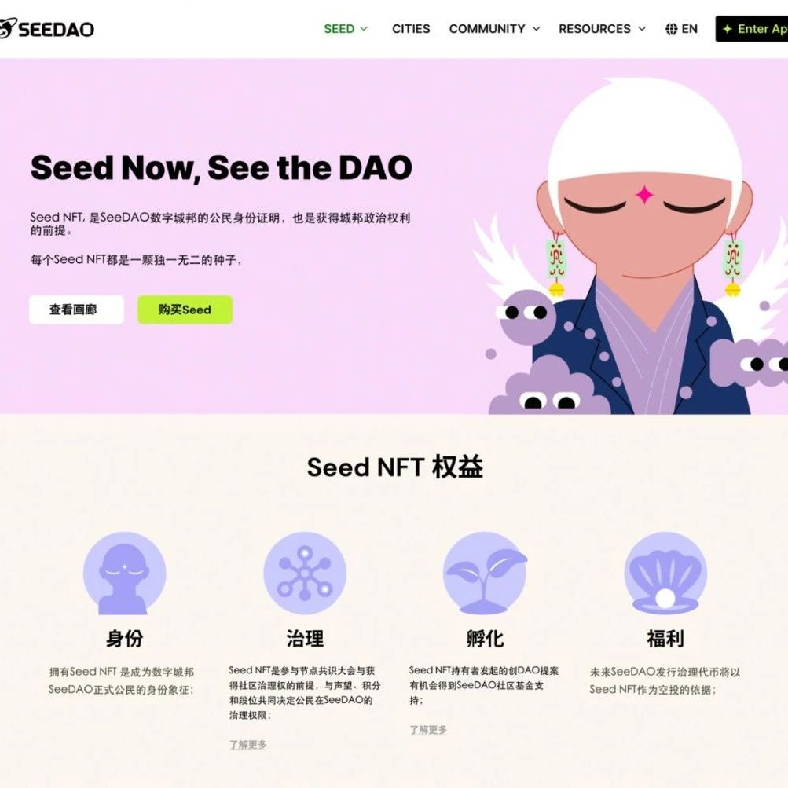

SeeDAO 空投，执行从 SGN 升级到 Seed NFT
作者: Scott
分类:
Seed, SeeDAO
6月份公告《SGN升级计划：从SGN到Seed》 讲述的新设计已经完成，将于 2023年8月28日进行空投！

随着 Seed NFT 新名称和视觉的推出， Seed 作为全球 DAO 场的根基，将代表 SeeDAO 数字城邦公民的权益证明，并与 DID，声誉，角色等元素一起协同构成 SeeDAO 成员的个人描述。未来还将围绕 Seed IP 的打造探讨 Seed 周边产品的开发，与其他线上及线下品牌的合作。期不期待，兴不兴奋？！
我有空投资格吗? 抽到的图片好不好看? 旧的SGN是不是绝版了？
现在逐一解答：
▶︎ 所有 SGN 持有者将获得对应原有编号的 Seed NFT 空投，如果还没有 SGN 但是想要获得空投，请及时在 snapshot 快照前凑够 SeeDAO 积分，进行 mint 铸造 SGN；或者在 OpenSea 购买。快照和空投日期请查看本文后面的时间线。▶︎ Seed NFT 采取公平随机配图方式，在9月1日开图后才知道自己是否获得稀有元素。未来新 mint 铸造采取随机编号模式，公平且刺激。开图前，社区内将组织表情包创作征稿，奖励1000积分。自己的头像会被恶搞吗？▶︎ SGN 的权益将完整转移至 Seed NFT。SGN 仍然存在，将永久关闭 mint 增量功能，限量版可自由交易转让，具有纪念意义。8月18日 Seed NFT网站上线（seed.seedao.xyz）图鉴功能展示520张图，社区可随意选择不知道会是谁的头像，制作表情包，发到 SeeDAO 微信群和 dc 里面分享，获得积分奖励。8月28日 北京时间 00:00am 关闭 SGN mint 铸造功能。▶︎ 北京时间 08:00am （UTC +0 00:00）对 SGN 持有者进行链上快照。8月31日 北京时间 08:00pm 停用SGN权益功能。9月1日 Seed NFT 开图，在 OpenSea 点击 Refresh metadata 查看自己头像的稀有度。请在微信或dc联系本次升级社区联系人 喵本scott （微信 scoluo） 。Seed NFT 的网站上线后将展示相关资料和 FAQ。让我们共同期待这个 SeeDAO 文化建设的里程碑。▶︎ 随着 SeeDAO 的全球影响力越来越大，且品牌调性越发明确，我们目前的SGN视觉形象已经不能满足品牌的需求▶︎ SGN 名字没有品牌识别度，对国内外社区都没有记忆点，需要宣传很多遍▶︎ 很多人不清楚 SGN 是在指代什么，无法和 SeeDAO 已有的叙事融合▶︎ Seed 可以理解为 SeeDAO 的种子，你需要在 DAO 内反复去积累因果，才能形成 SeeDAO 的种子▶︎ Seed 可以理解为佛教里的种子识（阿赖耶识），也就是一个人的本来面目、天命与道。闭眼内求的结果，就是要看到自己的 seed。SeeDAO（悟道）的结果，指向的是 seed（种子识）本身内容来源｜Scott
排版｜Ines
审核｜Ines